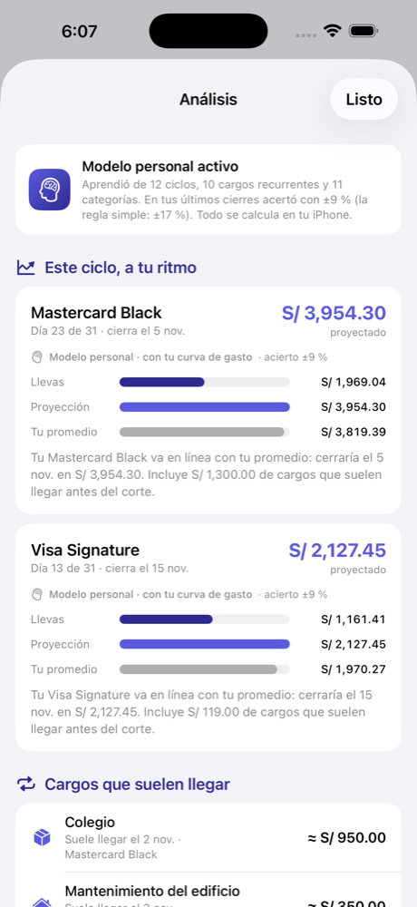
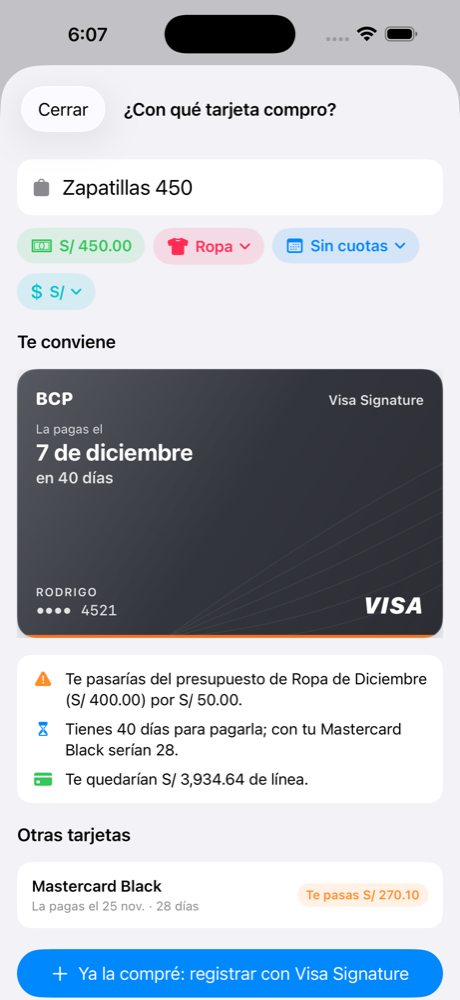
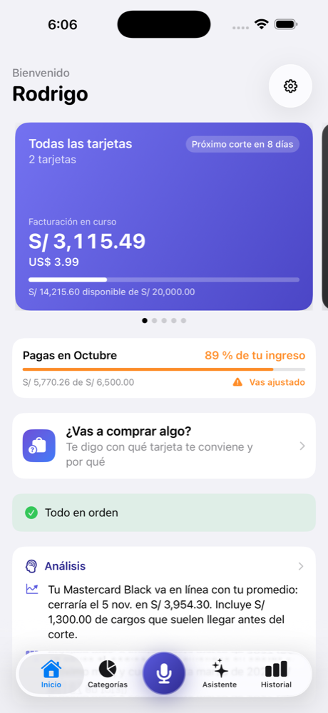
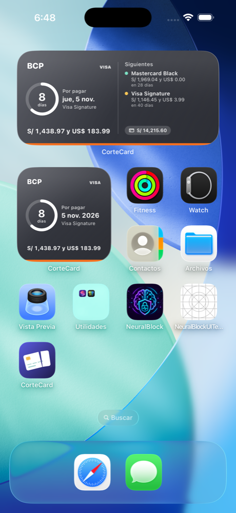
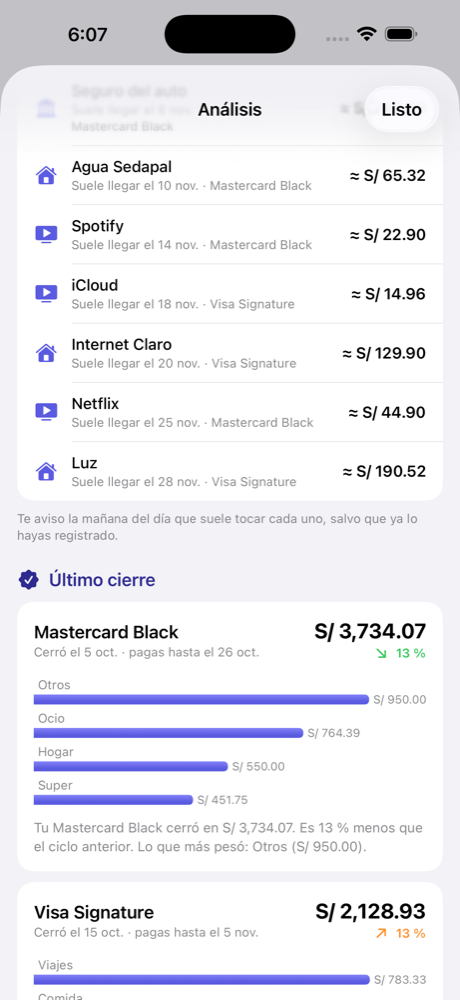
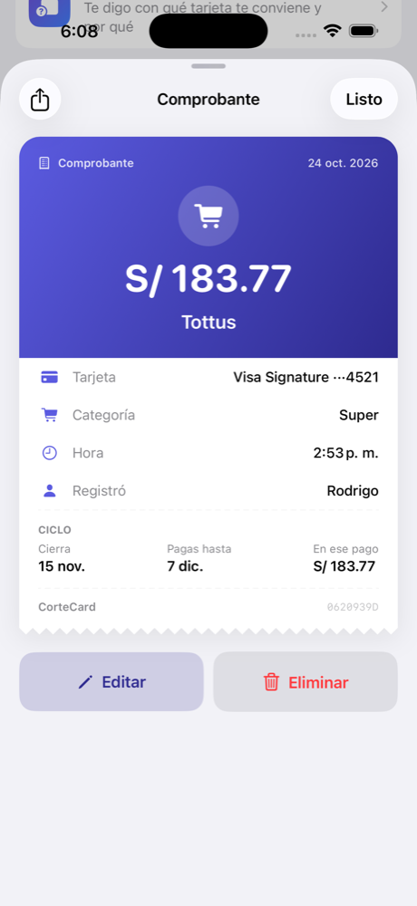
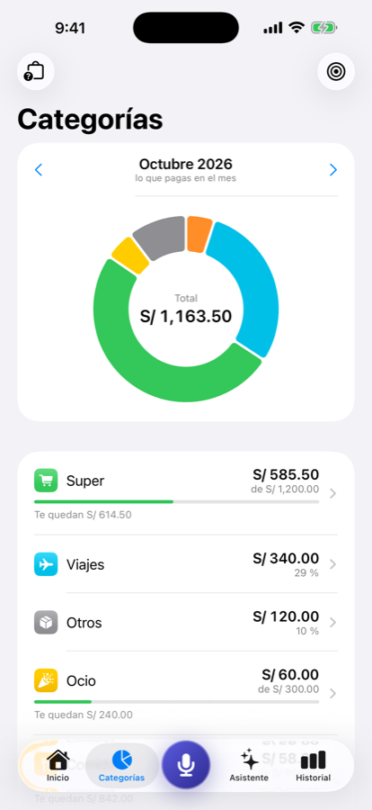

CorteCard aprende cómo gastas, te dice cuánto pagarás en el próximo corte de cada tarjeta, te avisa antes de cada cargo que suele llegar y te sugiere con qué tarjeta comprar. Todo en tu iPhone, sin claves bancarias.









Sin conectar bancos ni importar estados de cuenta. Tú registras en segundos; CorteCard calcula, aprende y te avisa.
Nombre, banco, línea, día de corte y día de pago. Una vez. CorteCard calcula cada ciclo y mueve el pago al día hábil correcto.
Dicta "cuarenta soles en Wong con la Visa" o deja que los pagos con el celular se registren solos. Cada gasto tiene su comprobante.
Con tres ciclos, el modelo personal proyecta tu cierre con tu propia curva de gasto, detecta cargos recurrentes y te recuerda cuándo tocan.
Un gasto se registra en el momento, no cuando llega el estado de cuenta. Dicta en dos segundos, o deja que el pago con el celular se registre solo, y CorteCard te confirma con un comprobante: en qué cierre cae, cuánto llevas y cuánto te queda.
Todo se calcula en tu iPhone. Con cada gasto, CorteCard entiende tu ritmo dentro del ciclo, tus hábitos por categoría y los cargos que se repiten, en todas tus tarjetas y en efectivo.
La app guarda cómo se distribuye tu gasto a lo largo de cada ciclo y lo usa para estimar el cierre desde el primer día. Si eres de gastar fuerte en quincena, lo sabe. Si la luz siempre llega al final, también.
Detecta lo que pagas cada mes aunque cambies de tarjeta, estima el monto y la fecha, y te recuerda la mañana que toca. Si ya lo registraste, no insiste. Y si un cargo deja de llegar dos meses, lo olvida.
Escribe o dicta "zapatillas 450" y CorteCard compara tus tarjetas: en qué mes pagarías con cada una según su corte, si te alcanza el presupuesto de esa categoría, cuánta línea te quedaría y cuántos días tendrías para pagar. Con cuotas también.
Pensada para tarjetas de Perú y Latinoamérica: ciclos de corte, fecha de pago, cuotas, presupuestos y más de una moneda.
No es una regla de tres. Aprende la forma de tu ciclo (quincenas, fines de semana, los cargos del final) y proyecta con tu propia curva. Se evalúa a sí mismo y solo se usa cuando acierta más que la regla simple.
Luz, agua, mantenimiento, Netflix, colegio: detecta lo que se repite y te lo recuerda la mañana que toca.
Mes de pago real según el corte, presupuesto y línea disponible.
"Cuarenta soles en Wong con la Visa". Entiende monto, tarjeta, categoría y cuotas.
Reparte una compra mes a mes y mira cómo quedaría cada pago antes de comprar.
4 de 12 cuotas pagadas · S/ 308.33 comprometidos el próximo mes
Comparte las tarjetas con tu pareja por iCloud: cada uno registra sus gastos, y te avisa cuando el otro usa tu tarjeta. Widget, Siri, Atajos y Face ID incluidos.
Totales separados por moneda con tipo de cambio de referencia. Tus datos viven en tu iPhone y en tu propio iCloud: sin cuentas, sin rastreo.
Sin limitaciones durante la prueba. Después, menos de lo que cuesta un café al mes. Cancelas cuando quieras desde tu cuenta de Apple.
Empezar 7 días gratisNo. Tú registras los gastos (por voz, escribiendo o con la automatización de pagos con el celular) y CorteCard hace las cuentas. No pide usuarios ni claves bancarias, y por eso funciona con cualquier tarjeta de cualquier banco.
Con lo que registras, la app calcula en tu iPhone tu curva de gasto dentro del ciclo, tus hábitos por categoría y los cargos que se repiten cada mes. Necesita unos tres ciclos para activar el modelo; mientras tanto usa una proyección simple y te lo dice.
Sí, con una automatización de Atajos de tipo "Transacción" que se configura una vez (la app te guía). Cada pago llega con monto, comercio y tarjeta; si la tarjeta no coincide, te avisa para corregirla o crearla.
En tu iPhone y, si activas la sincronización, en tu propia cuenta de iCloud. Nadie más tiene acceso, ni siquiera nosotros.
Los primeros 7 días son gratis con todas las funciones. Después cuesta 3.99 US$ al mes o 29.99 US$ al año (precio local según tu país). Puedes cancelar cuando quieras desde los ajustes de tu cuenta de Apple.
Sí. La moneda principal se detecta por el país de tu iPhone y puedes elegir una segunda moneda. Los feriados para mover la fecha de pago están calibrados para Perú.
Disponible para iPhone en la App Store. Prueba gratis con todas las funciones.
Descargar enApp Store* Acierto medido en los últimos cierres del ejemplo con 12 meses de datos; la app muestra el tuyo en Análisis.